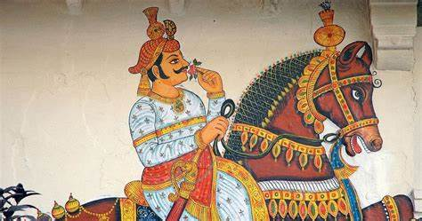
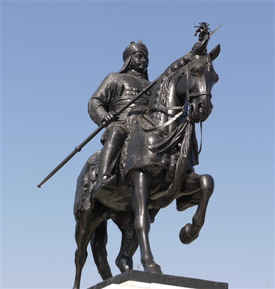
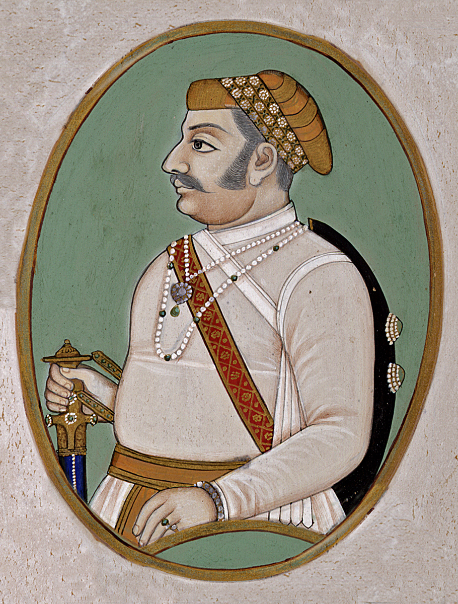
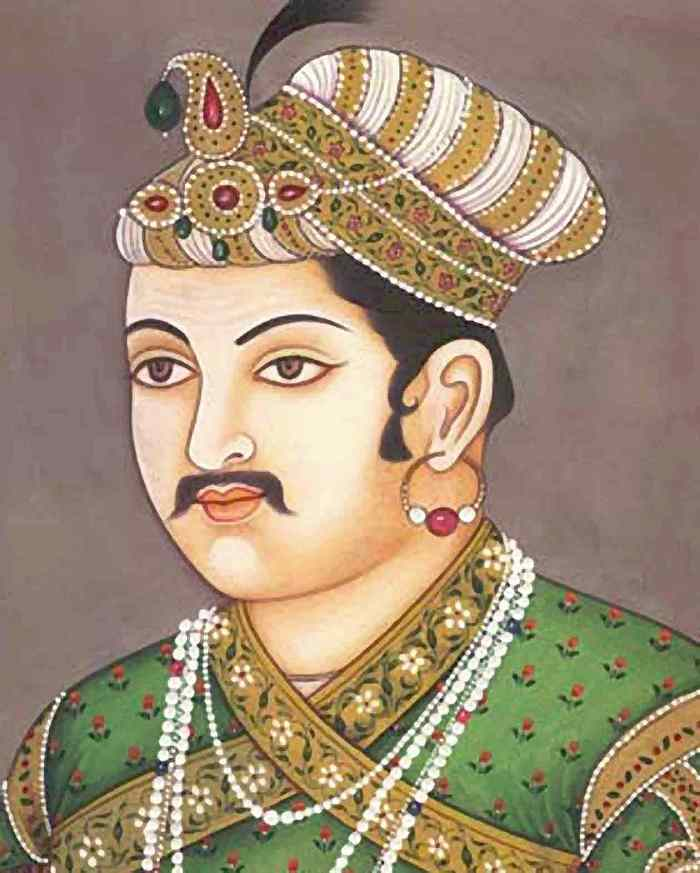
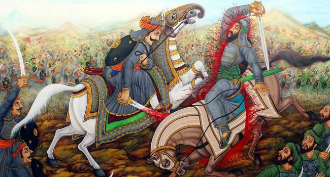

Pratap Singh I, popularly known as Maharana Pratap, was a Hindu Rajput king of Mewar. He was titled as "Mewari Rana" and was notable for his military resistance against the expansionism of the Mughal Empire and is known for his participation in the Battle of Haldighati and the Battle of Dewair.It is important to note that although this decision of Mewar Nath Maharana Udai Singh was against the conventions of the Mewar family, but Kunwar Pratap did not show any type of displeasure towards his late father and his decision, and respected it as an obedient son.
-
Uday Singh(Father)

-
Chetak(Horse of Pratap)

-
Amar Singh(Son)

-
Enemy(Akbar)

Maharana Pratap was born in Hindu Rajput family to Udai Singh II of Mewar and Jaiwanta Bai.[5][6][7] His younger brothers were Shakti Singh, Vikram Singh and Jagmal Singh. Pratap also had 2 stepsisters: Chand Kanwar and Man Kanwar. He was married to Ajabde Punwar of Bijolia[8] and he had married 10 other women and was survived by 17 sons and 5 daughters including Amar Singh I.[9] He belonged to the Royal Family of Mewar.
After the death of Udai Singh in 1572, Rani Dheer Bai wanted her son Jagmal to succeed him[11] but senior courtiers preferred Pratap, as the eldest son, to be their king. The desire of the nobles prevailed. Udai Singh died in 1572, and Prince Pratap ascended the throne as Maharana Pratap, the 54th ruler of Mewar in the line of the Sisodia Rajputs.[12] Jagmal swore revenge and left for Ajmer, to join the armies of Akbar, and obtained the town of Jahazpur as a Jagir as a gift in return for his help.[13]
-
Family History
Kunwar Pratap Singh was the eldest son and the rightful heir to succeed to the throne and become the 54th custodian of the House of Mewar (the Maharanas of Mewar aren't rulers, but custodians who rule on behalf of Shri Eklingji) upon the death of his father, Maharana Udai Singh II. Maharana Udai Singh passed away in the February of 1572. Pratap was to rightfully ascend the throne at Gogunda on February 28, 1572.
But Maharana Udai Singh, in influence of of his favorite queen, Rani Bhatiyani, disregarding completely the well-established rule of primogeniture, had, with his last breath, proclaimed his son with Bhatiyani - Jagmal, as his successor to the throne of Mewar. When this became known at the funeral of the deceased Maharana, Jevanta Bai's brother and Kunwar Pratap's uncle - Sonigara Man Singh of Pali, desirous of seeing his sister's son have his just and lawful right, beeseeched Rawat Krishna Das of Saloombar, the scion of Choonda, to intervene in the matter and prevent the perpetration of this injustice and the consequent ruin of Mewar, which was inevitable if internecine disaffection further caused its already diminished state to deteriorate.
It is important to note that although this decision of Mewar Nath Maharana Udai Singh was against the conventions of the Mewar family, but Kunwar Pratap did not show any type of displeasure towards his late father and his decision, and respected it as an obedient son.
Rawat Krishna Das pledged his support to Kunwar Pratap, and he along with Raja Ram Shah, the erstwhile prince of Gwalior proceeded forthwith to where Jagmal had beseated himself on the 'gaddi' amidst some of the nobles of the realm. Each of them took an arm of Jagmal and with gentle violence removed him to a seat in front of the cushion remarking - "You have made a mistake, Maharaj; that place belongs to your brother".
-
Body Apperance
Maharana Pratap is revered as one of the strongest warriors India has ever seen. Standing at 7 feet 5 inches, he would carry a 80-kilogram spear and two swords weighing around 208 kilograms in total. He would also wear an armour weighing 72 kilograms.
Pratap's ascension to the throne was not easy. Rani Dheer Bai, Pratap's stepmother, wanted Kunwar Jagmal to be the king after Udai Singh's defeat at the hands of Mughal emperor Akbar. In 1568, Akbar had captured the Chittorgarh Fort and the Mewar royalty took shelter in Udaipur. After a long conflict and debate, Pratap was made the king as the court found Jagmal to be as an unfit ruler.
-
Domestic pressure
Before fighting the Mughals, Pratap had to face the wrath of his domestic adversaries. By the time of his reign, almost all Rajput dynasties had surrendered to Akbar and had become members of his council. Akbar had sent six diplomatic missions to Pratap to create a peaceful alliance between the two mighty rulers.
-
Preparing For Battle

After the fifth diplomatic mission, Pratap had sent his son Amar Singh to the Mughal court to deny Akbar's proposal of peace. As he did not present himself before the Mughal emperor, Akbar took offence. Due to his act of defiance, Akbar decided to go ahead with the battle and fight with Pratap.
Pratap's prowess in fighting battles was proved during the Battle of Haldighati in 1576. Mughal emperor Akbar ordered Man Singh I, one of his Rajput army commanders, and Asaf Khan I to attack Pratap
-
Allies
This helps lot to fight against enemy List of the name of Friends who gave their 100% without thought about own life
- Rawat Krishnadasji Chundawat
- Maan Singhji Jhala
- Chandrasenji Rathore of Marwar
- Hakim Khan Sur